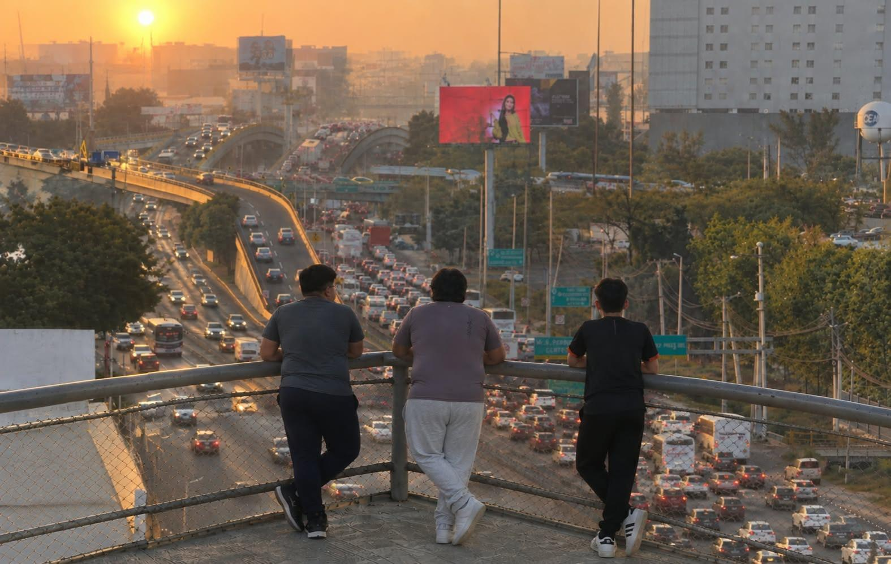

EXPOSICIÓN ARTÍSTICA
Una mirada diferente a nuestro entorno
Gracias por visitar este espacio. A través de la fotografía buscamos compartir una perspectiva sobre nuestro entorno, las experiencias que vivimos y las reflexiones que pueden surgir al observar una imagen.
Te invitamos a recorrer la exposición, escuchar las participaciones de los integrantes y descubrir el mensaje que queremos transmitir.

El atardecer
La fotografía titulada El atardecer muestra a tres personas contemplando una ciudad durante la puesta de sol. En la imagen destaca el contraste entre la tranquilidad del cielo y la actividad urbana, donde se observan edificios, vehículos y anuncios luminosos.
Esta composición nos invita a reflexionar sobre la relación entre las personas y el entorno que han construido. También permite reconocer algunos problemas de la vida urbana, como la contaminación y el congestionamiento vial, que afectan nuestro ambiente y nuestra calidad de vida.
Desde la filosofía del arte, podemos relacionar esta imagen con John Dewey, quien considera que el arte surge de la experiencia y de la interacción con nuestro entorno. Por otra parte, la fenomenología de Edmund Husserl nos ayuda a comprender que cada persona puede observar e interpretar una misma realidad de manera diferente.
En conjunto, la fotografía busca transmitir la importancia de detenernos, observar lo que nos rodea y reflexionar sobre la necesidad de encontrar un equilibrio entre la vida cotidiana y el medio ambiente.
Ciencia de Datos e Inteligencia Artificial
Grupo CDIA-305
Ciencia de Datos e Inteligencia Artificial
Grupo CDIA-305
Ciencia de Datos e Inteligencia Artificial
Grupo CDIA-305
Nos interesa conocer tu experiencia al visitar nuestra exposición. Te invitamos a responder el siguiente formulario y compartir tu opinión sobre la fotografía y el mensaje que transmite.
Responder formulario